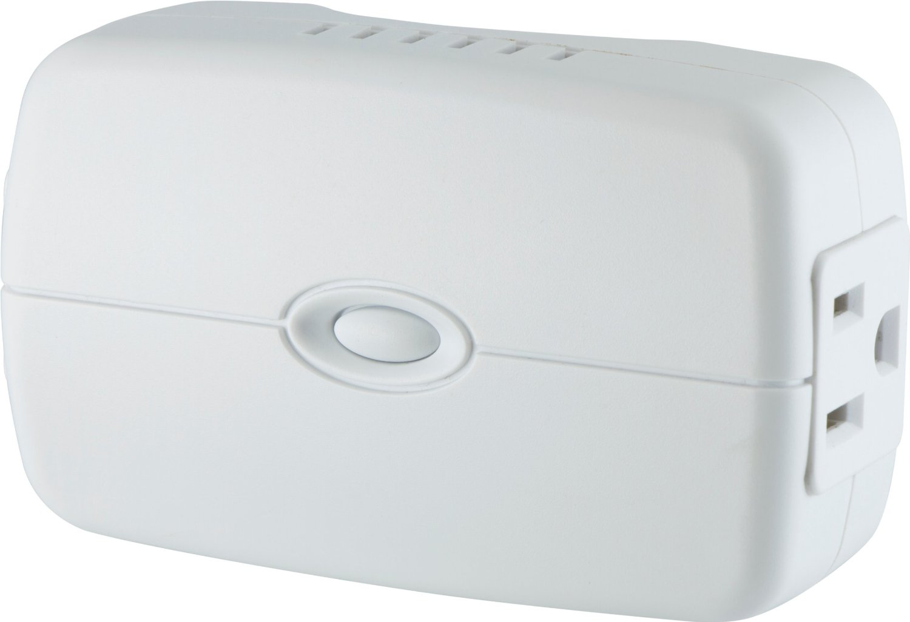

GE Z-Wave Wireless Lighting Control Lamp Module with Dimmer Control¶

Basic operation¶
- Easily control lighting with your mobile device or computer using any Z-Wave certified gateway, or control lighting on location with the manual push-button control or a Z-Wave certified remote
- Dimmer control customizes lighting output and creates the perfect ambiance for any room
- White lighting control matches most standard wall plates
- Space-efficient, side-plug design does not block lower outlet or obstruct placement of furniture
- Features one always-on pass-through AC outlet and one Z-Wave enabled outlet
- Compatible with any Z-Wave certified gateway, providing remote access from many popular home automation systems and applications (application software not included)
- Can be controlled in groups of multiple lights or used to create dimmable ambient interior lighting scenes
How to add to VENUS app¶
- 1. Activation
- Press “Add button” (button ‘+’) in app
- Plugin device to power supply socket
- Triple press z-wave button
- Wait for VENUS scan & detect this device and inform in app
- 2. Reset then re-add
- Press “Add button” (button ‘+’) in app
- Plugin device to power supply socket
- Triple press z-wave button (to reset)
- Triple press z-wave button one more time (to add)
- Wait for VENUS scan & detect this device and inform in app
Configuration description¶
There is no configuration in this device.